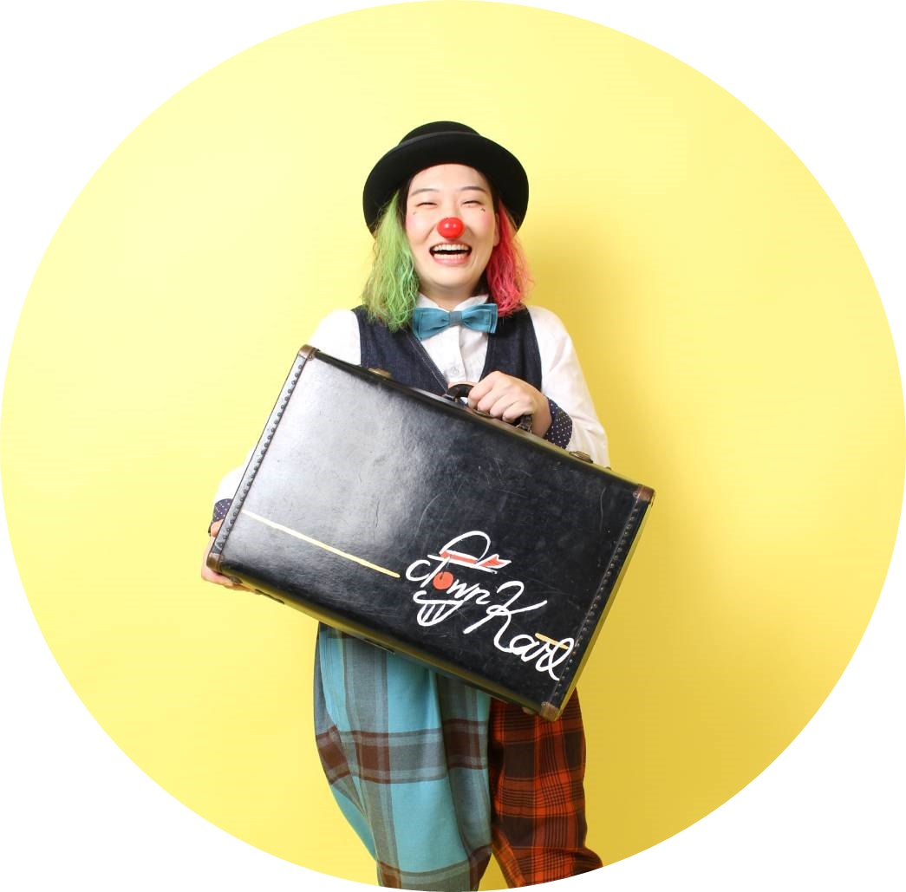
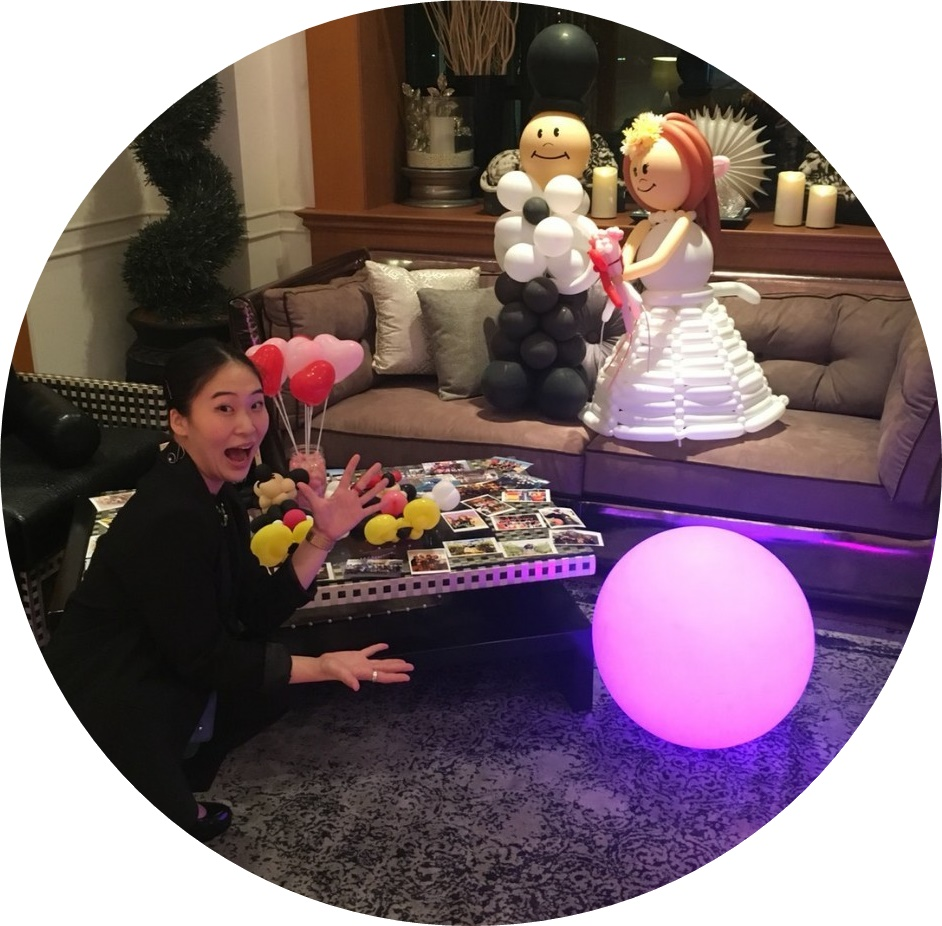

【経歴・出演歴】
4才よりクラッシックバレエを始める。
粕谷辰雄バレエスタジオで城杉子、
富永典子に師事。紫人会公演「じゃじゃ馬ならし」
「人魚の姫」「玉手箱」「空蝉」に出演。
「骨髄バンク 命のつどい」にエトワールバレエにてゲスト出演。
「薄井憲二先生、米寿を祝う会」出演。
その他にもダンサーとして多くの舞台出演をこなしながら、
コンテンポラリーダンス、ジャズダンスなど他ジャンルのダンスも学び、研鑽を積む。
その後クラウンに興味を持ち、
2017年3月にPAC汎マイム工房(事務所PAC)に入所。
パントマイム、クラウニング、ジャグリング、バランス芸、
バルーンアートなどを学び、トライアル公演にも出演。
外部では、長野県キッズサーキットinSAKU リトルパレード出演。
その他、小学校公演やショッピングモールでのシャボン玉ショーに
クラウンとして出演する。
PAC汎マイム工房(事務所PAC)を2019年10月に退所。
現在は、フリーで活動中。
パフォーマンスの幅を広げるため、コントーション(軟体芸)、
コンテンポラリーダンス、ジャズダンス、
タップダンスなど様々なジャンルを勉強しながら、
ダンスの舞台やピエロショーなどに出演し活動の幅を広げている。

